福地精细像素素材
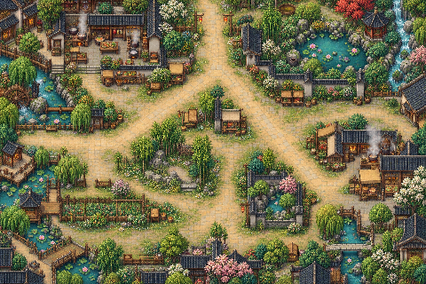
01 · 第1轮 · 青岚灶街像素场景已检查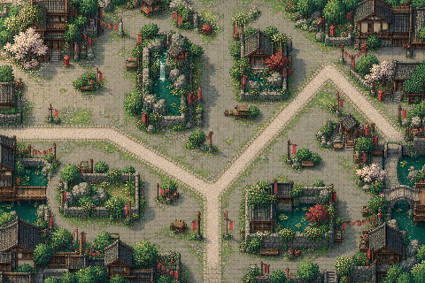
02 · 第1轮 · 旧城邮驿像素场景已检查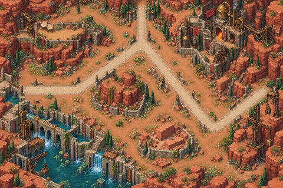
03 · 第1轮 · 赤岩钟楼像素场景已检查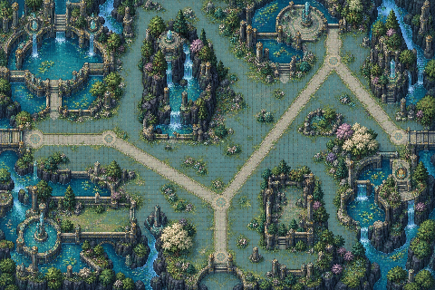
04 · 第2轮 · 灵泉记录站像素场景已检查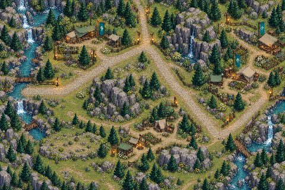
05 · 第2轮 · 归航救援营像素场景已检查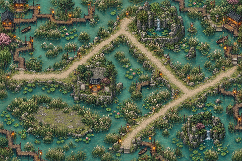
06 · 第2轮 · 雨灯湿地像素场景已检查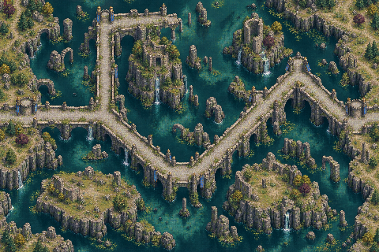
07 · 第3轮 · 断桥驿路像素场景已检查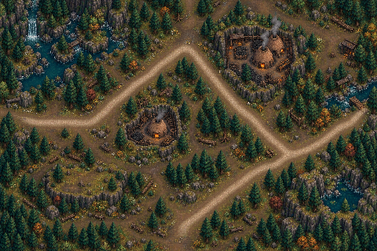
08 · 第3轮 · 松烟炭林像素场景已检查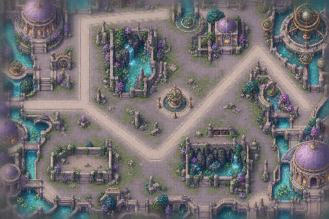
09 · 第3轮 · 镜沙档案馆像素场景已检查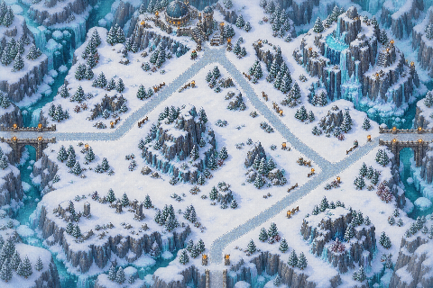
10 · 第4轮 · 霜脊瞭望岭像素场景已检查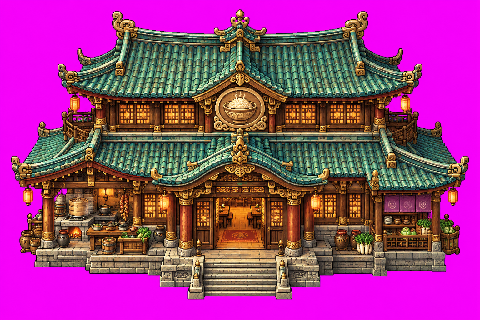
11 · 第4轮 · 青岚百味大食堂已检查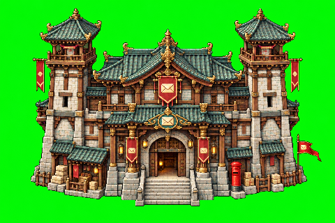
12 · 第4轮 · 旧城总邮驿已检查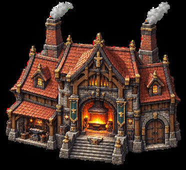
13 · 第5轮 · 赤岩铸造大殿已检查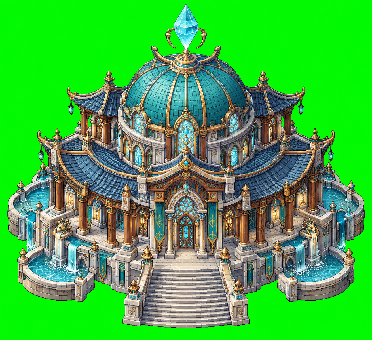
14 · 第5轮 · 灵泉水镜圣所已检查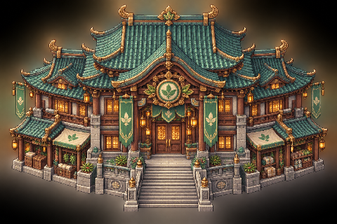
15 · 第5轮 · 归航救援总厅已检查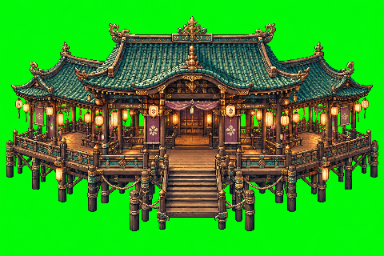
16 · 第6轮 · 雨灯临水长榭已检查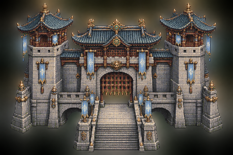
17 · 第6轮 · 断桥守望关楼已检查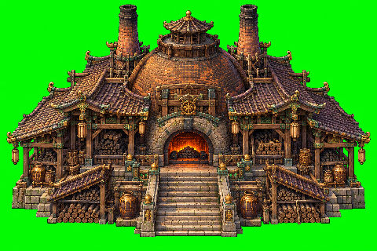
18 · 第6轮 · 松烟封火大窑已检查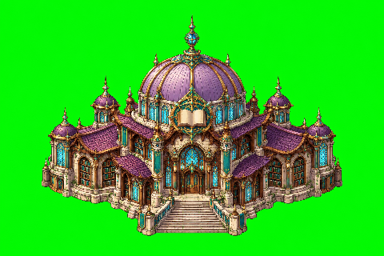
19 · 第7轮 · 镜沙星穹档案馆已检查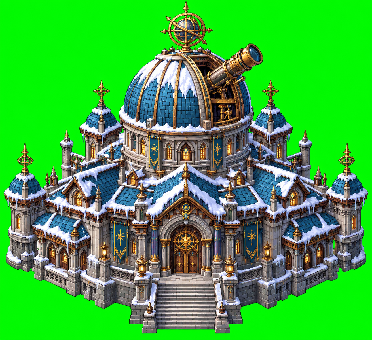
20 · 第7轮 · 霜脊观星高台已检查21 · 第7轮 · 普通宝箱·关闭已检查22 · 第8轮 · 普通宝箱·已领取已检查23 · 第8轮 · 异变宝箱·封印待检查待生成
24 · 第8轮 · 异变宝箱·守卫中待生成待生成
25 · 第9轮 · 异变宝箱·可领奖待生成待生成
26 · 第9轮 · 异变宝箱·已领取待生成待生成
27 · 第9轮 · 止血草待生成待生成
28 · 第10轮 · 青露叶待生成待生成
29 · 第10轮 · 甘露莓待生成待生成
30 · 第10轮 · 醒神叶待生成待生成
31 · 第11轮 · 安息花待生成待生成
32 · 第11轮 · 灵草待生成待生成
33 · 第11轮 · 暖绒花待生成待生成
34 · 第12轮 · 石缝苔待生成待生成
35 · 第12轮 · 清凉薄荷待生成待生成
36 · 第12轮 · 灯芯草待生成待生成
37 · 第13轮 · 苦心根待生成待生成
38 · 第13轮 · 止血草·萌芽/生长/成熟待生成待生成
39 · 第13轮 · 青露叶·萌芽/生长/成熟待生成待生成
40 · 第14轮 · 甘露莓·萌芽/生长/成熟待生成待生成
41 · 第14轮 · 醒神叶·萌芽/生长/成熟待生成待生成
42 · 第14轮 · 安息花·萌芽/生长/成熟待生成待生成
43 · 第15轮 · 灵草·萌芽/生长/成熟待生成待生成
44 · 第15轮 · 暖绒花·萌芽/生长/成熟待生成待生成
45 · 第15轮 · 石缝苔·萌芽/生长/成熟待生成待生成
46 · 第16轮 · 清凉薄荷·萌芽/生长/成熟待生成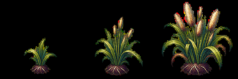
47 · 第16轮 · 灯芯草·萌芽/生长/成熟待检查48 · 第16轮 · 樟树已检查49 · 第17轮 · 松树已检查50 · 第17轮 · 炭松已检查51 · 第17轮 · 雪松已检查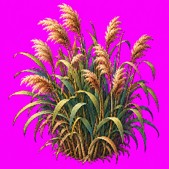
52 · 第18轮 · 芦苇丛已检查53 · 第18轮 · 荷叶莲花已检查54 · 第18轮 · 野莓灌木已检查